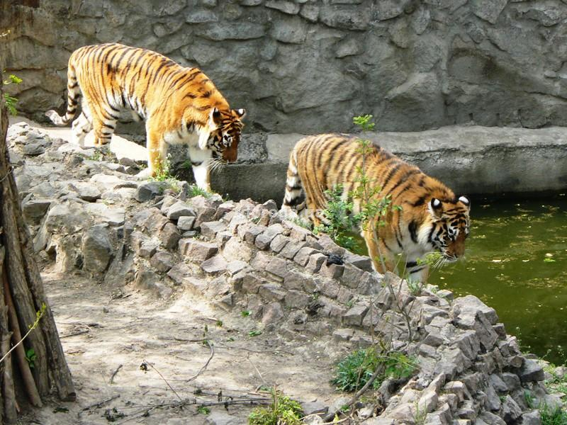

Николаевский зоопарк
Одним из самых лучших и самых известных зоопарков в Украине является Николаевский зоопарк, расположенный на площади Леонтовича. История зоопарка началась с 1901 г., когда городской голова Н. Леонтович создал свою частную коллекцию - аквариум-музей. Николаевский зоопарк стал первым украинским зоопарком, который в 1993 г. приняли в Европейскую Ассоциацию Зоопарков и Аквариумов, а в 2003 г. - во Всемирную ассоциацию зоопарков и аквариумов. На сегодняшний день коллекцию зоопарка составляют почти 5690 животных 460 видов, большинство из которых занесены в Красную Книгу. Просторные вольеры позволяют имитировать естественную среду обитания животных, что положительно сказывается на их поведении и приносит радость посетителям. Большой интерес представляют крупные животные – львы, тигры, бегемоты, медведи, многие из которых ранее выступали в цирке. Здесь представлена достаточно большая коллекция обезьян - мартышки, шимпанзе и макаки. Гордость Николаевского зоопарка - это 60-летний крокодил Вася, старейшее животное украинских зоопарков, а также 8-метровый питон Сетка - самая крупная змея в Европе. Зоологический сад имеет огромную коллекцию птиц - от маленьких колибри до громадных орлов, а в аквариумах Николаевского зоопарка собраны представители водного мира со всего земного шара. В мае 2006 года в Николаевском зоопарке был открыт «Сад живых тропических бабочек».
Николаевская астрономическая обсерватория
Николаевская обсерватория - одна из старейших обсерваторий Восточной Европы, основана в 1821 году в качестве морской. С 1912 года она становится Николаевским отделением Главной (Пулковской) астрономической обсерватории (ГАО). В 1935 году была включена в сеть научных учреждений Академии наук СССР в качестве Николаевского отделения ГАО. В 1992 году становится самостоятельным научным учреждением Украины, а с 2002 года - Научно-исследовательским институтом «Николаевская астрономическая обсерватория» (НИИ НАО). В настоящее время НИИ НАО находится в подчинении Министерства образования и науки Украины. Николаевская обсерватория была включена в Предварительный список объектов Всемирного наследия ЮНЕСКО от Украины (Tentative list № 5116, Tentative list № 5267). В настоящее время в обсерватории ведутся работы в следующих областях: динамика тел Солнечной системы, исследования объектов околоземного пространства, создание астрометрических каталогов звёзд, информационная поддержка астрономических исследований, астрономическое приборостроение, история астрономии.
Детский городок "Сказка"
Детский городок «Сказка» - это небольшой парк общей площадью 2,5 га, открытие которого состоялось 19 мая 1982 года. Это в своем роде уникальный парк, построенный методом народной стройки с участием строителей, художников, скульпторов, монументалистов. Детский городок - это не только музей всех видов художественного и декоративно - прикладного искусства, это еще и дендропарк с экзотическими растениями (тюльпановое дерево, павловния, гинго, айлант, биота, будлеи, вейгела, гибискус, дейция, пироканта, дрок и много других). Детский городок «Сказка» - это единственный в Украине культурно - игровой комплекс, в котором воплощена идея целенаправленной работы по всестороннему воспитанию и развитию подрастающего поколения. Как и все новое и интересное, «Сказка» привлекла людей творческих, которые любят и понимают детвору. Разнообразные праздники, конкурсы и фестивали разных уровней, и просто игровые программы собирают большое количество участников. Посмотреть на чудо - городок приезжают гости из разных стран мира, а также со всех уголков Украины. Бюджетное учреждение «Культурно - игровой комплекс «Детский городок «Сказка» в 2009 году был признан одним из «7 чудес Николаева».